The Sea's props, set right
The user, 2026-11-14: "lets look at all props one by one and make the correct". Every kind of prop on these ten floors was drawn on its own beside the hero
(the sheets at the bottom), every floor was walked by a probe that checks each placed part against the ground, the other props, the cover, the roads and the floor's
spots (pipeline/tools/props-probe.js), and every fault below was fixed at its cause, so every floor gets the fix. Nothing that was right was moved:
the scenes, packs, doors and quests stand where they stood (table below).
The faults and the fixes
Roadside lanterns hung beside their arm
floors 1-10, 102 lanterns
Wrong: The lantern hung on the far side of its post from the arm meant to hold it: a box in the air, an arm holding nothing.
Cause: depth.ts: the arm was turned a quarter the wrong way (left and right swapped).
Fix: The arm is turned over its lantern.
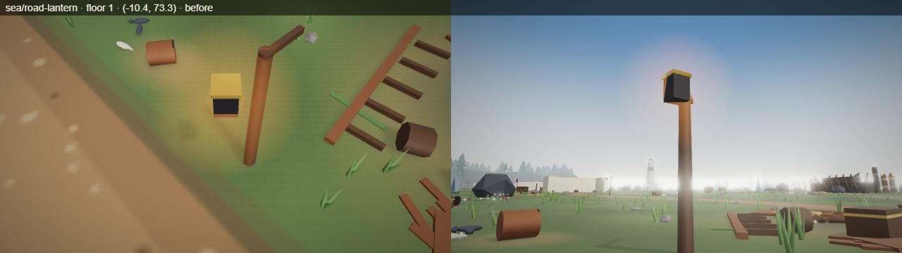
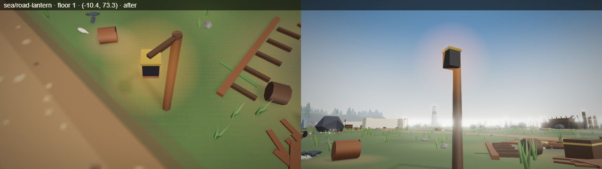
Market nets across their poles
floors 1-10, 24 nets
Wrong: The net hung square across the line of its two poles, touching neither.
Cause: depth.ts: the net was turned a quarter too far.
Fix: The net runs from pole to pole.
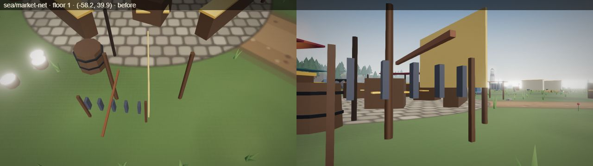
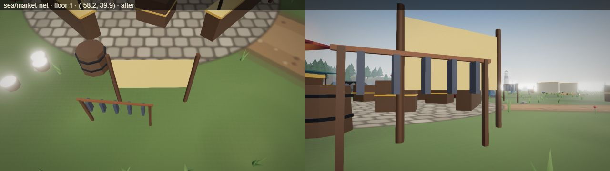
Fish racks: the bar across the posts, the fish in the air
floors 1-10, 16 racks (80 fish)
Wrong: The bar lay square across its two posts; the fish hung in a row in the air under nothing.
Cause: depth.ts: the bar was turned a quarter too far, and the fish hung 10 cm below it.
Fix: The bar runs from post to post and the fish hang from it.
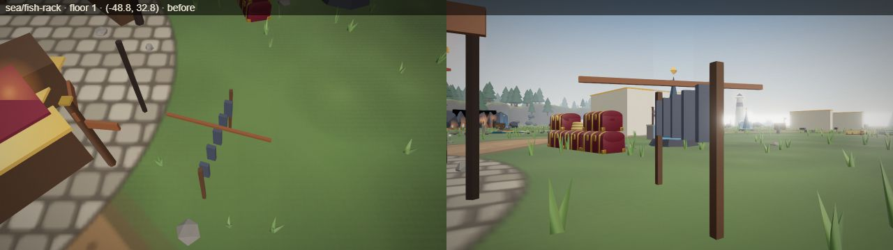
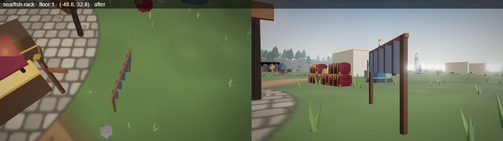
Washing lines across their posts
floors 1-10, 19 lines
Wrong: The line ran square across its two posts; the washing hung in the air.
Cause: depth.ts: the line was turned a quarter too far.
Fix: The line runs from post to post; the washing hangs on it.
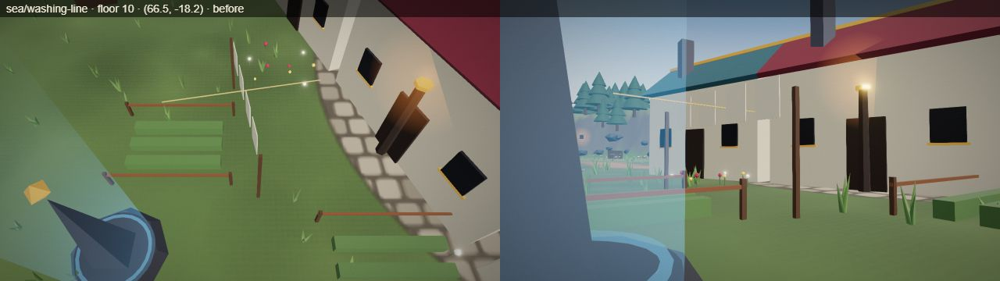
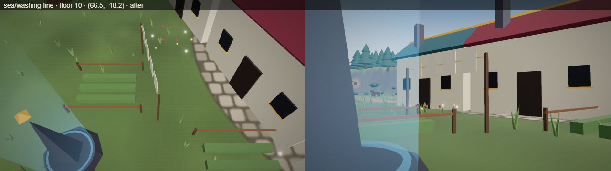
The village well: roof over its posts, water over the rim
floors 1-10, 10 wells
Wrong: The roof floated 5 cm over its posts and the dark water stood 2 cm over the stone rim, like a lid.
Cause: depth.ts: heights.
Fix: The roof sits on its posts; the water is below the rim.
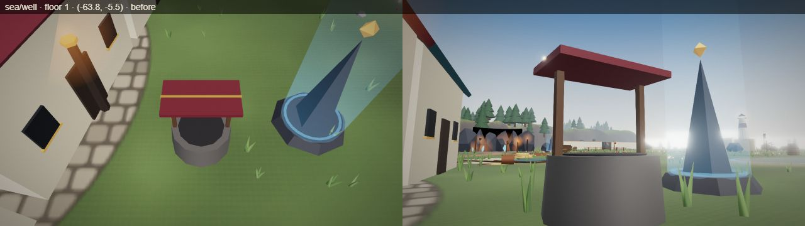
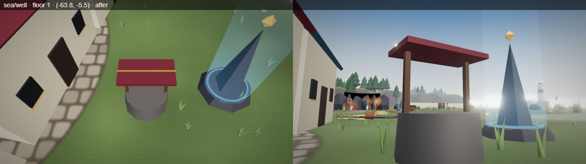
Boats: the sail beside the mast; boats in each other
floors 1-10, 59 sails, 4 pairs of boats, boats on jetties
Wrong: Each sail stood 0.9 m out from its mast, held by nothing. Boats were set down at random in the bay, so some lay inside each other or across a jetty.
Cause: land.ts: the sail was moved forward instead of sideways; the boats were never kept apart.
Fix: The sail's edge is on the mast. A boat that would lie in another or across a jetty is not drawn (the scenes keep off its water as before).
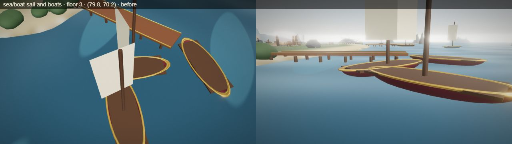
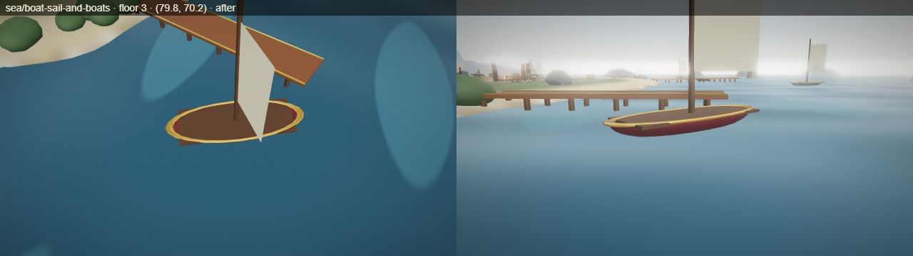
Jetty piles short of the deck
floors 1-10, 26 jetties
Wrong: The piles stopped 9 cm under the deck: seen from low, the deck floated over them with light between.
Cause: land.ts: the piles' height.
Fix: The piles reach the deck.
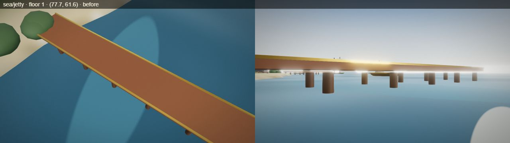
Houses on the hillside with a side in the air
floors 1-10, about 240 houses on slopes
Wrong: A house stood at the height of the ground under its middle, so on a slope its low side stood up to 2 m in the air.
Cause: land.ts: the plinth was a fixed 0.5 m.
Fix: The plinth reaches down to the lowest ground under the house.
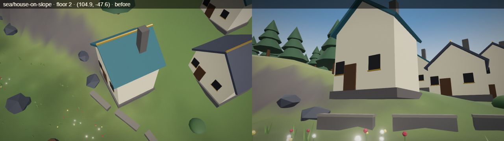
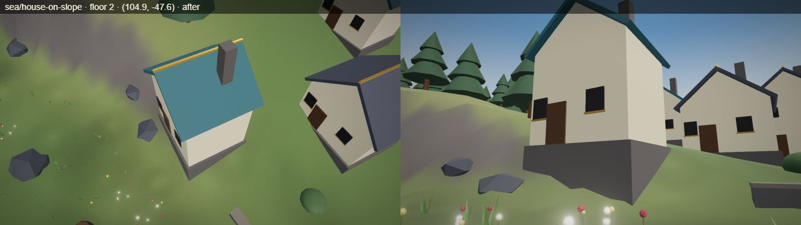
The town wall through houses
floors 1-10
Wrong: Stretches of the dry-stone wall at the edge of town ran into the corners of houses.
Cause: land.ts: the wall did not know the houses.
Fix: The wall stops short of a house.
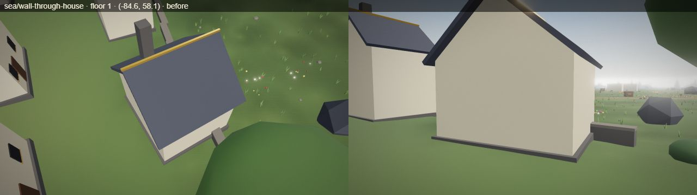
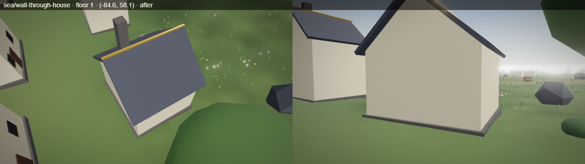
Boulders hanging off the cliff's foot; trees through them
floors 1-10, about 120 boulders, 72 trees
Wrong: Set by the ground under their middle, boulders on the steep cliff foot hung out over the slope on their low side; pines grew through some.
Cause: land.ts: the height from the middle only; trees were placed without the rocks.
Fix: On steep ground a boulder sits lower, so its low side comes down to the ground (by 0.4 of its size at most, so it still shows). A tree inside a boulder is left out of the drawing.
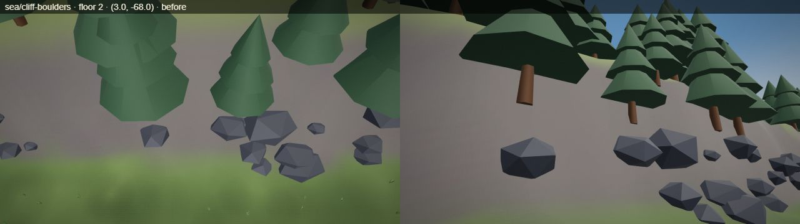
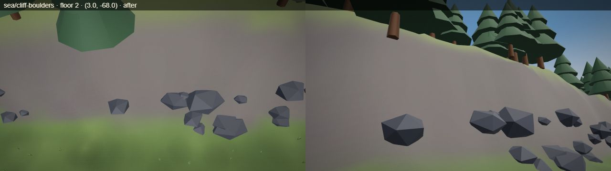
Crates: the gold band square to the world
floors 1-10, every crate (about 25 a floor); the Wood too
Wrong: The crate was turned, its gold band was not: the band's corners stuck out of the crate's sides as gold triangles.
Cause: zone.ts: the band had no turn.
Fix: The band turns with its crate.
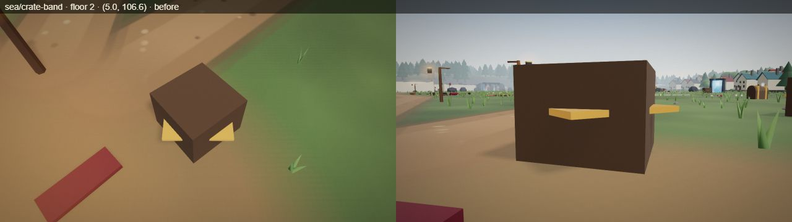
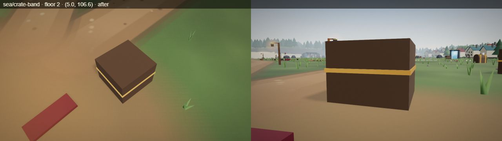
Market stalls: poles in the wrong places
floors 1-10, the tall stalls
Wrong: One pole stood in the middle of the counter, the other half a stall's length past its end (on the road); the awning hung between them over nothing at one end.
Cause: zone.ts: the poles were measured from one end of the stall instead of its middle.
Fix: A pole at each end, under the awning's ends.
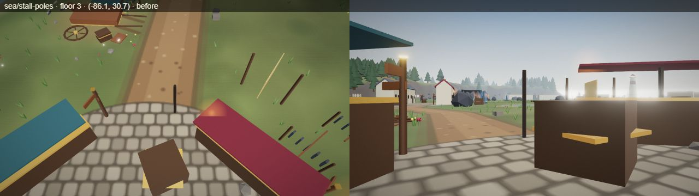
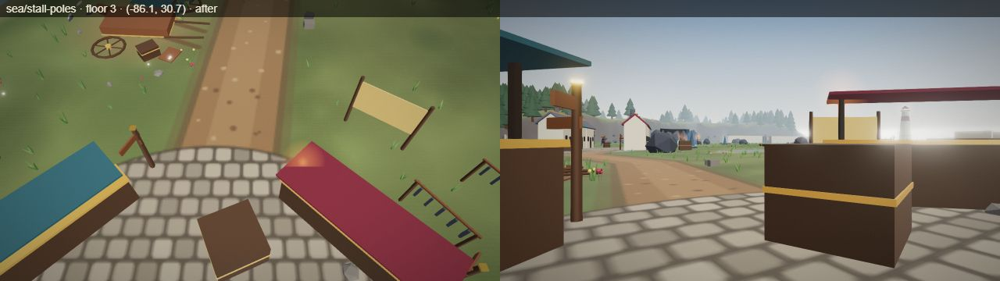
The wreck's ribs leaned the world's way
floors 1-10, every wreck
Wrong: The ribs along the wreck all leaned north and south, whatever way the hull lay, so on most wrecks they leaned along it.
Cause: zone.ts: the lean was not turned with the hull.
Fix: The ribs lean in across the hull, each side towards the other. (The broken mast was fine: it starts inside the hull.)
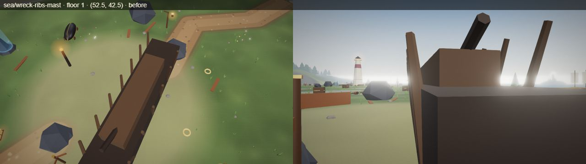
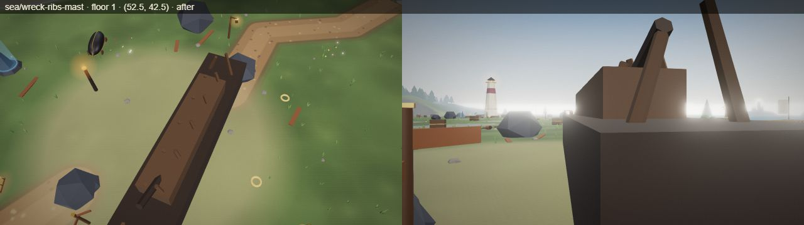
The lighthouse roof on nothing
floors 1-10, 10 lighthouses
Wrong: The lantern's roof floated a metre above the gallery with nothing under it.
Cause: zone.ts: no lantern room.
Fix: Six posts from the gallery up to the roof, the light between them.
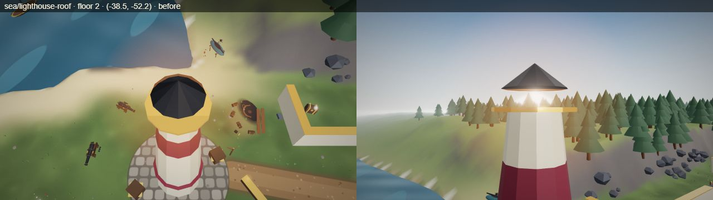
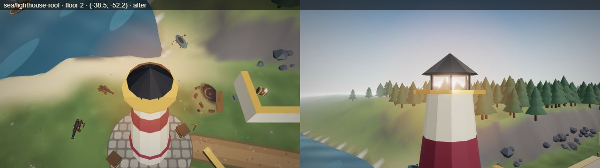
Plaza lanterns on the road
floors 1-10, 29 lanterns on a road, 20 on a floor spot
Wrong: The lantern post at each plaza's rim stood towards the middle: often on the road into the plaza, and sometimes on a person, a waystone or a quest spot.
Cause: zone.ts: always the same direction.
Fix: It is turned along the plaza's rim until it stands off the roads, the floor's spots and the cover.
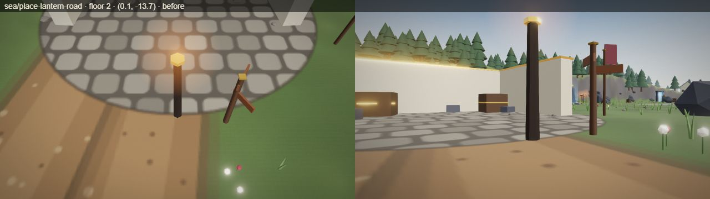
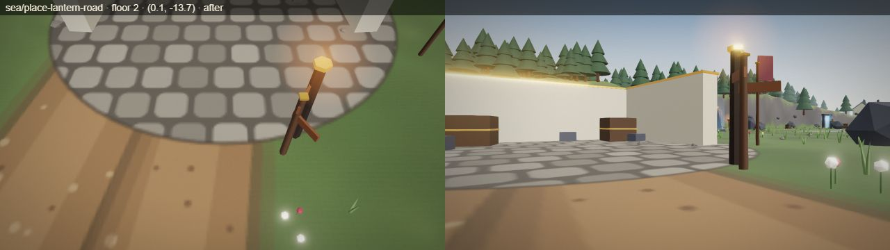
Plaza lantern on a floor spot
one of the 20
Wrong: The lantern post stood where a person stands.
Cause: zone.ts, as above.
Fix: As above.
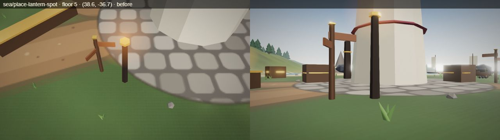
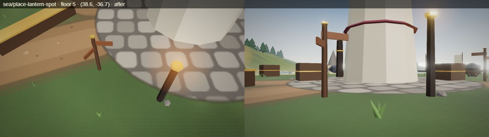
Signposts and others on floor spots
floors 1-10, 6 signposts, 2 graves, 3 washing lines, a garden
Wrong: The depth's props kept off roads and cover but not the floor's spots: a signpost stood through a waystone, a grave on a quest step.
Cause: depth.ts: the spots were not asked.
Fix: A prop planned on a spot is not drawn. It is planned as before, so the random stream and every other prop stay where they were.
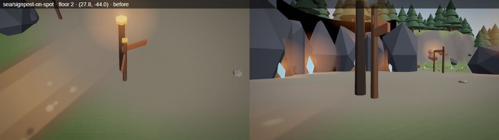
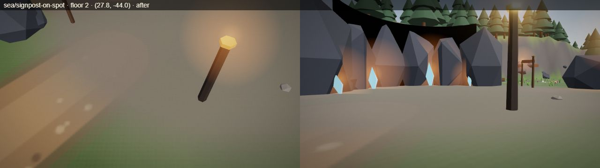
Two piles of chests in each other
floors 2-10, 10 pairs
Wrong: The harbour's own props (chests, barrels, cannons, boats on chocks) were set by the floors' maker without keeping apart: two piles of chests stood inside each other.
Cause: zone.ts / the floor data: no spacing between them.
Fix: A copy that would stand in one drawn before it is left out.
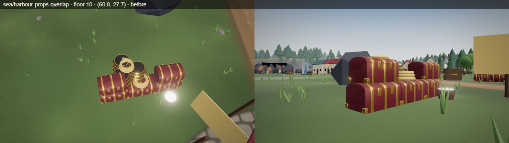
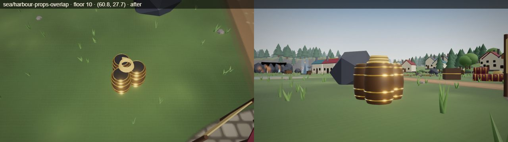
Depth props inside the harbour's props
floors 1-10, about 10
Wrong: A fish rack or a net stood inside a pile of chests.
Cause: depth.ts: the harbour props load later and the depth did not keep off them.
Fix: Such a depth prop is not drawn (planned as before).
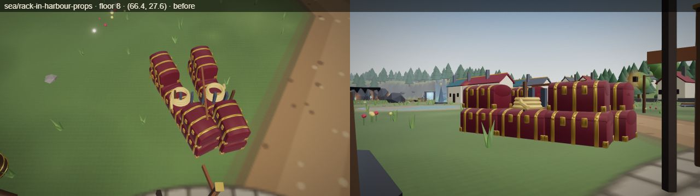
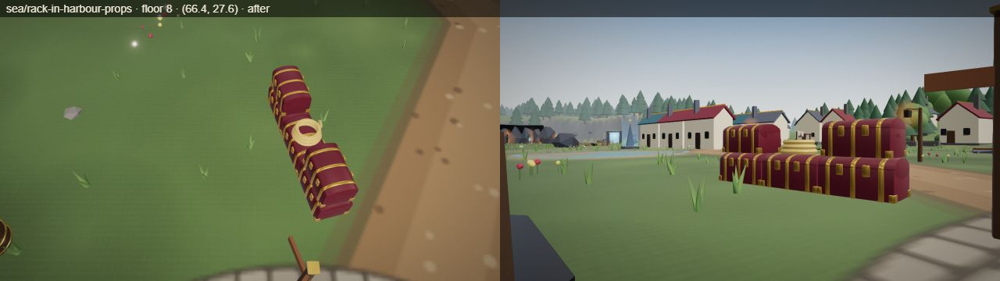
A boat being caulked: its keel in the air
floors 2-5
Wrong: The keel was a straight bar on the boat's rounded bottom: it touched in the middle and stood clear of it towards both ends.
Cause: scenes/sea.ts: a straight keel.
Fix: The keel follows the hull's curve.
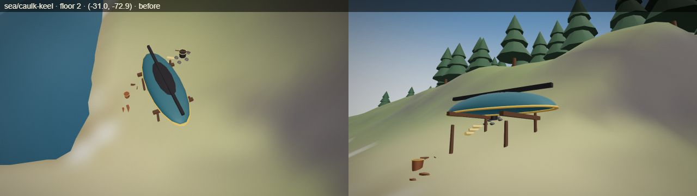
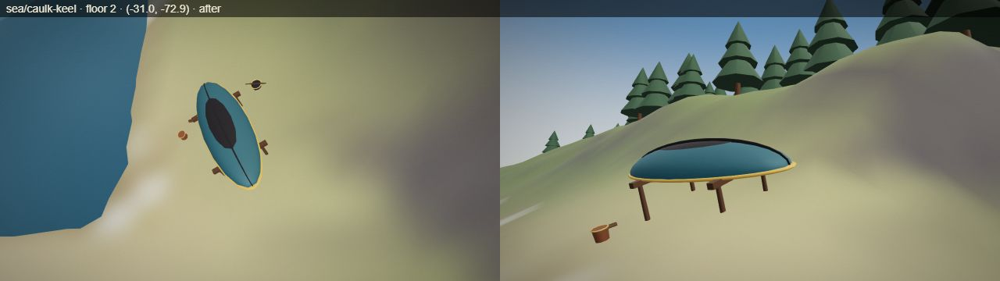
The capsized ship's keel
floors 1-10, one or two a floor
Wrong: As above, on the big hull out on the rocks: a 15 m beam lying over the hull.
Cause: scenes/sea.ts.
Fix: The keel follows the hull's curve.
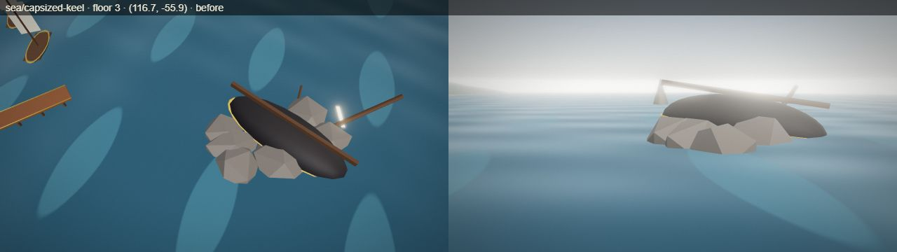
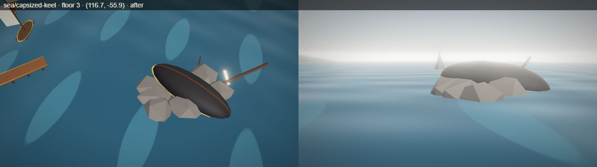
Fish racks on the beach
floors 8-10
Wrong: The strings the fish hung by lay flat, so the fish hung 20 cm under the pole; on a slope the frames and the pole stood apart.
Cause: scenes/sea.ts: the strings lay along x; each part stood on the ground under its own middle.
Fix: The strings hang from the pole; the scene is laid as one piece on its slope (below).
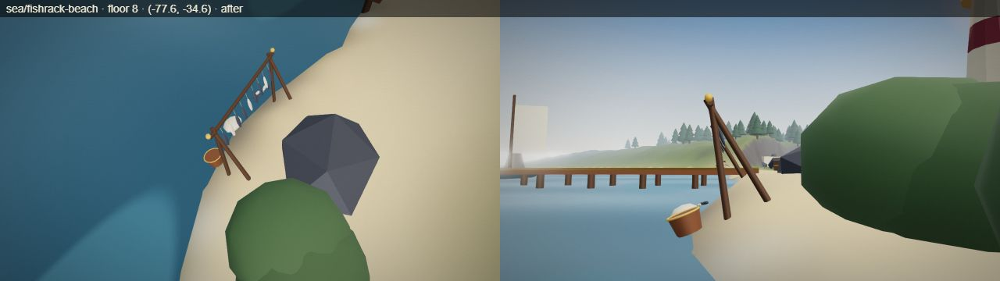
The cart stuck at the tide line
floors 3, 6, 9
Wrong: The hubs sat on the tops of the wheels, not in their middles; on the steep beach the cart, its wheels and its shafts stood apart in the air.
Cause: scenes/sea.ts: the hub's height; each part on its own ground.
Fix: The hubs are in the wheels' middles, sunk to the hubs in the sand; the scene is laid as one piece on its slope.
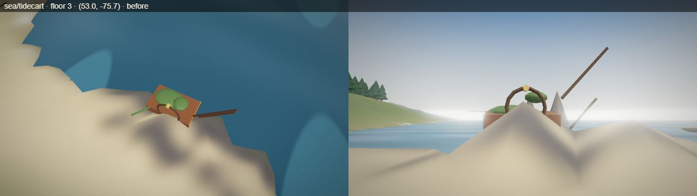
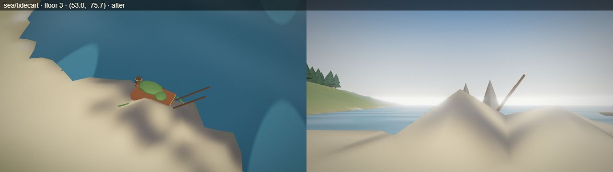
The memorial: the bow under the cairn
floors 1-10, the bow kind (10)
Wrong: The broken bow lay under the cairn of stones and the cloth meant to lie on it floated 17 cm in the air beside it.
Cause: scenes/sea.ts: the bow was turned half round.
Fix: The bow lies before the cairn with the cloth on it.
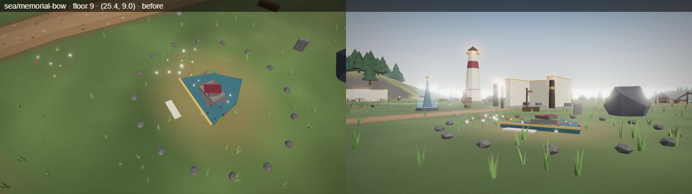
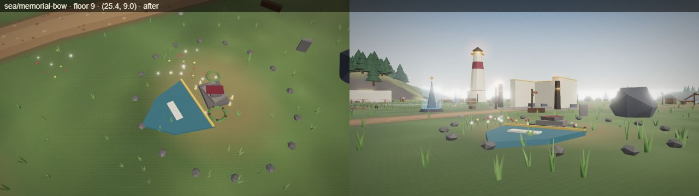
Trees on the far islands
floors 1-10
Wrong: The island's trees all stood at one height: sunk in its middle, a little in the air at its edge (far out at sea, hard to see).
Cause: depth.ts: one height for all.
Fix: Each tree stands on the island's green where it is.
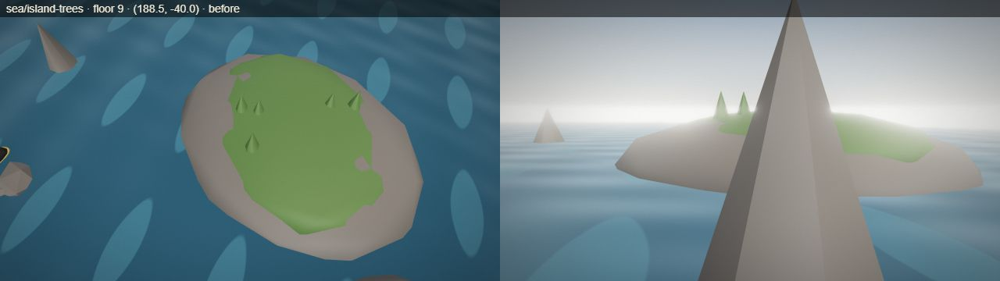
Also fixed
- Beach scenes on a slope. Every scene past the outline (a rowing boat, a boat being caulked, the fish rack, the cart, the mooring) stood each part on the ground under its own middle, so on a slope a part stood off the one it sits on. Now the scene is turned to the plane that fits the ground under it (20 degrees at most) and let down until none of its feet is in the air. Shown in the fish rack, the cart and the caulking pairs above.
Seen and left
- Cover on the roads. Some rocks, stalls and ruin walls (the floor's cover, which the fights use) stand on a painted road. They are the floor's layout, not looks: left where they are.
- The lair wall. On a few floors the back wall of the ruler's lair runs into a dune or a hill at one end (lair-wall pair, unchanged). It reads as a wall built into the slope; left.
- Boulders in piles. Fallen rocks overlap each other at the cliff's foot: a pile, as it should be.
- The wreck's broken mast. The probe called it loose; it starts inside the hull and leans out of it (wreck pair). Fine.
- Small shells under the sand. After laying the beach scenes on their slopes a few shells and pegs are a few cm under the sand: not seen.
- A signpost board over a spot. On floor 3 a signpost's board reaches over a quest spot at 2 m; the post itself is clear of it. Left.
- Baskets of the catch, the chapel benches. The white catch in the market baskets reads bright from above and the benches are plain blocks: a matter of taste, not a mistake. Left for the artist.
The probe, before and after
Counts over the ten floors. What is left is mostly by design: plinths and roots sunk into the ground ("sunk"), cover drawn on the roads ("road"), a pile of rocks ("overlap"), the side of a house's wall above its now deep plinth ("side"), parts of one prop the probe counts apart (the Elder's crown, a long jetty's deck).
| kind | before | after |
|---|---|---|
| apart | 505 | 70 |
| buried | 14 | 25 |
| float | 137 | 136 |
| overlap | 439 | 363 |
| road | 108 | 81 |
| side | 480 | 331 |
| spot | 34 | 2 |
| sunk | 588 | 621 |
| tree | 78 | 12 |
Nothing else moved
Every vertex the floor draws, in 4 m squares, on the base and on the branch (pipeline/tools/props-same.js): only the squares with a fixed prop change.
The scenes (kind and place), the packs and the doors are the same.
| floor | scenes | scenes in place | packs and doors the same | 4 m squares changed |
|---|---|---|---|---|
| 1 | 37 | yes | yes | 386 of 4897 |
| 2 | 40 | yes | yes | 377 of 4941 |
| 3 | 39 | yes | yes | 429 of 4960 |
| 4 | 42 | yes | yes | 337 of 4922 |
| 5 | 42 | yes | yes | 357 of 4920 |
| 6 | 35 | yes | yes | 394 of 4999 |
| 7 | 37 | yes | yes | 414 of 4947 |
| 8 | 42 | yes | yes | 395 of 4981 |
| 9 | 38 | yes | yes | 398 of 4940 |
| 10 | 40 | yes | yes | 427 of 4997 |
The route bot
| floor | result | game time | falls | restarts |
|---|---|---|---|---|
| 1 | cleared | 1280 s | 0 | 0 |
| 10 | cleared | 1714 s | 0 | 0 |
Speed
perf.py, the base (a git worktree) and the branch, twice each, in turn. Frame time median in ms (and draw calls).
| scene | profile | base | branch |
|---|
Every kind, on its own
Each kind (the line of code that placed it, a scene, a harbour prop) alone on the floor's ground, the hero beside it: the game's camera and low beside it. Sheets marked "before" are of kinds only drawn there (taken before the fixes).
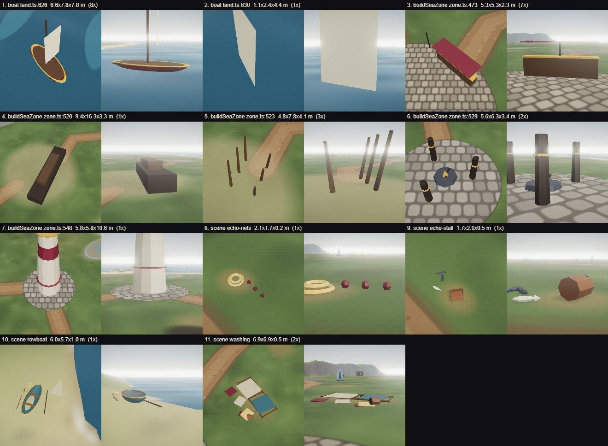
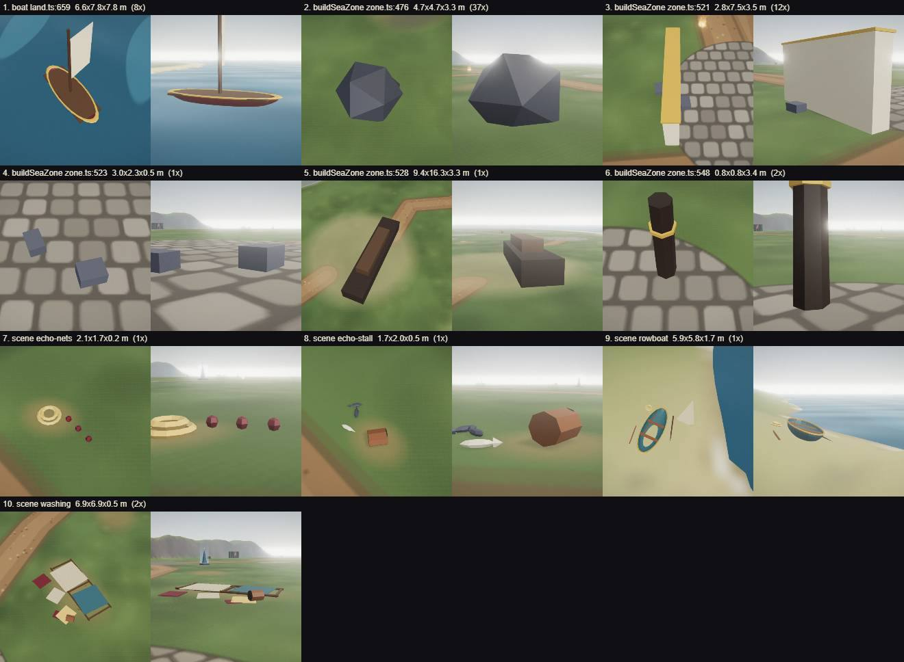
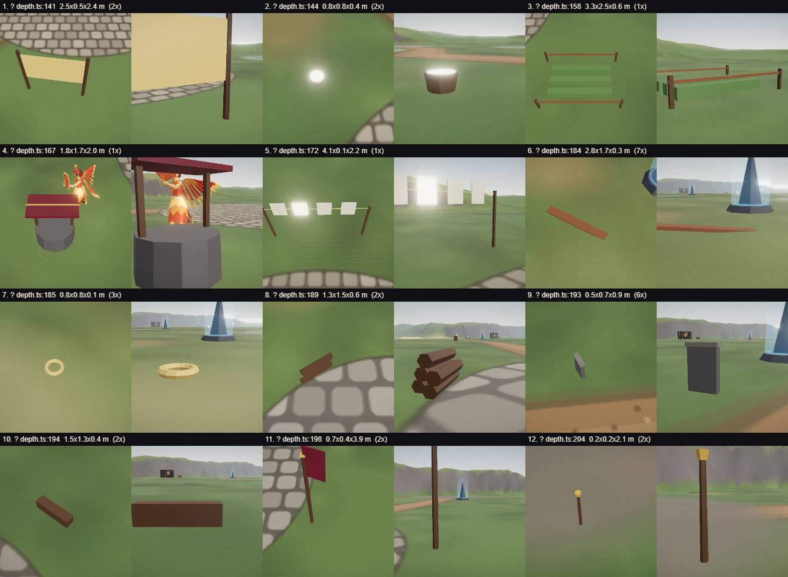